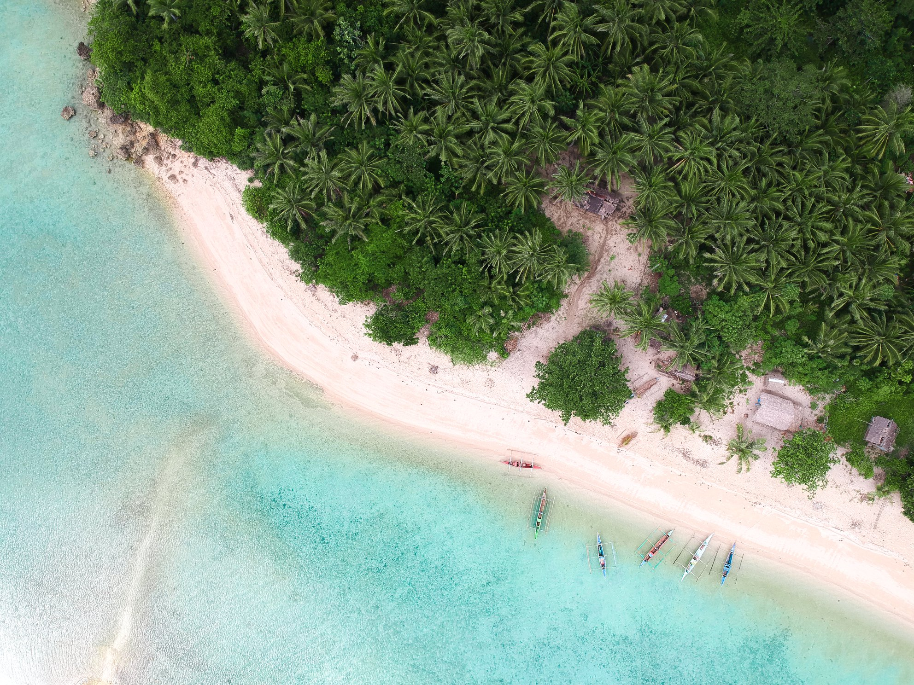
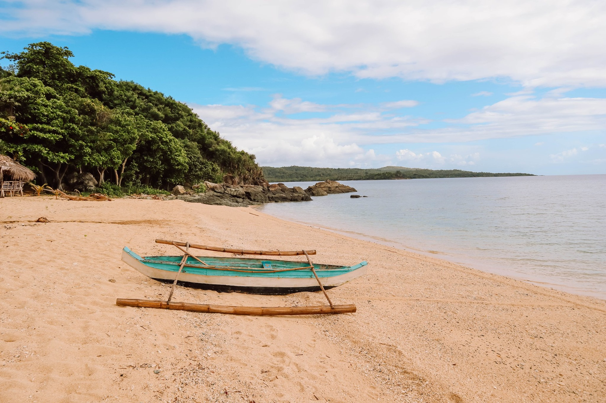
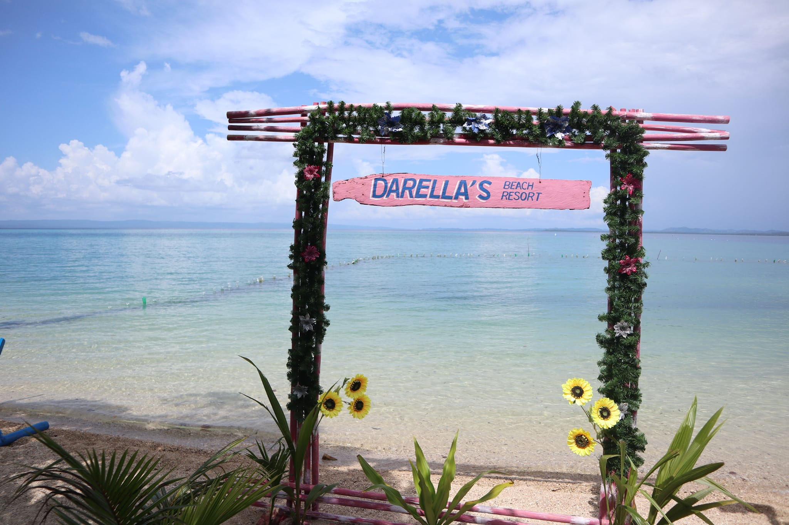
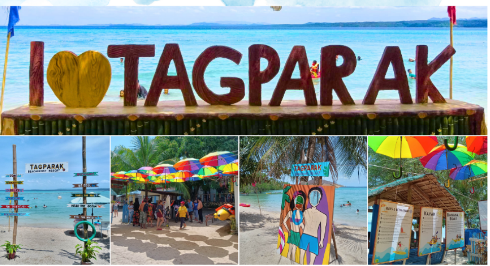

| RAGAY CAMARINES SUR |

| Welcome to Ragay Camarines Sur, which is renowned for its amazing crystal clear blue water and is situated in the Bicol Region of the Philippines! Because nicer water makes for a more enjoyable experience, this raises the amount of beach recreation! Don't be too cool, though! Since most beaches in Ragay are found inside the settlement, the primary tourist attractions are typically accessible by foot from these locations. But don't anticipate being in a dull and repetitive setting. |





|
.png) |
Ragay is a coastal Municipality in the province of Camarines Sur[Ragay Turismo]. The Municipality makes up 7.28% of Camarines Sur's total area with a land area of 400.22 square kilometers, or 154.53 square miles. 58,214 people were living there as of the 2015 Census. This was equivalent to 1.00% of the population of the Bicol Region or 2.98% of the entire Camarines Sur province. These numbers are used to calculate the population density, which comes out to 145 people per square kilometer or 377 people per square mile. |
| Stories passed down from generation to generation state that up until its secession on April 15, 1753, Ragay was a visita (part) of Lupi. The Paculago River was the source of the municipality's name, Ragay. People and communities who spoke Tagalog, Bicol, and Visayan lived there during that time. During the same time period, Paculago was frequently raided by Moro pirates, who also left many dead and buried there. However, the settlers left Paculago and moved to the upper part of the Ragay River because of Christian beliefs that forbade burying Moros among Christians and because the Moros were constantly raiding their town. The name of the new community was "Hagay," which translates to "single, inhabited by pure Christians." The Ragay name originated in the 1840s. As the Moros at last ceased attacking the Hagay settlers, the town was moved to its current whereabouts. The Spanish arrived at this period. A Spanish soldier attempted to get the name of one of the female settlers as soon as he arrived. The woman replied, "Hagay," not realizing what the soldier was asking, but the soldier mispronounced her name as "Ragay." |
| CITATIONS: |
|
| CONTACT US | |||
.png) |
Kimberly M. Doloso |
 |
Flora May M. Mallo |
| FOLLOW US | ||||
 |
 |
 |
.png) |
 |
| Lower Sta. Cruz, Ragay, Camarines Sur | ||||
| Copyright © 2023. All rights reserved. | ||||